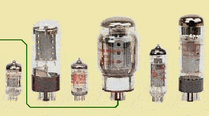
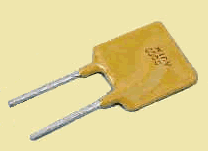
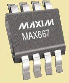
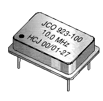
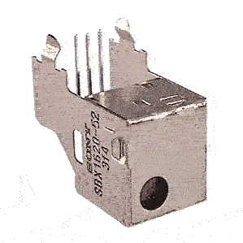
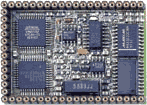

 PRESENTATION DES COMPOSANTS QUE J'UTILISE...  ... Les fusibles réarmables POLYSWITCH.  ... Le MAX667 (ADP667) Régulateur de tension Low-Dropout ... convertisseur RS232 - MAX232 - MAX232A - MAX232E  ... Oscillateurs à quartz compacts et stables ... Un émetteur à composant unique entre 45MHz et 650MHz (Exemple émetteur FM)  ... Le module de réception Infrarouge SONY SBX1620-52 ...PIC16F84 ou PIC16F628 ?  ... Les modules à microcontrôleurs Phytec.

PRESENTATION DES COMPOSANTS QUE J'UTILISE...




